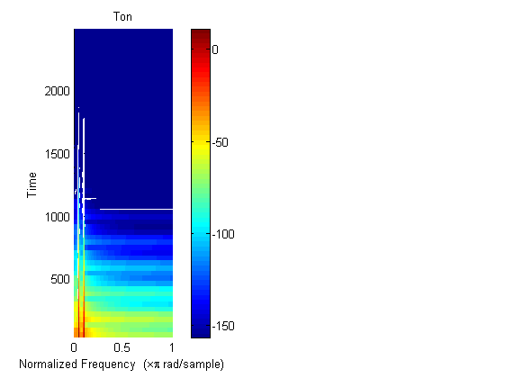

Contents
Aufgabe: Hallgenerator
Geben Sie für ein digitales System mit der Abtastfrequnz f_A= 8kHz die Filterkoeffizienten für eine Hallerzeugung mit der Periode 0.25s sowie der Dämfpung 0.8, und hören Sie sich das Ergebnis für einen Beispielton an. (c) B. Wir 26.7.2012
clear all; close all;
Sinuston mit Profil
F_A = 8000 % Abtastfrequenz in Hz T_A = 1/F_A % Abtastabstand in s WINDOW = 512; % Fenster für Spektrogramm F = 200; % Frequenz in Hz t = 0:T_A: 2.000-T_A; x = sin (2*pi*F*t); x = x + 0.8* (x.^2-0.5); + 0.5 .* x.^5; % mit Obertönen profil = exp(-t*15); % .* (1-exp(-t*100)); x = x.*profil; % .. und Profil figure(1); subplot(1,2,1) spectrogram(x,WINDOW);colorbar;title('Ton') soundsc(x,F_A);
F_A =
8000
T_A =
1.2500e-004
 Hallgenerator
a = ............ ........
y = filter(1,a,x); soundsc(y,F_A); figure(1); subplot(1,2,2) spectrogram(y,WINDOW); colorbar;title('Spektrogramm/dB')